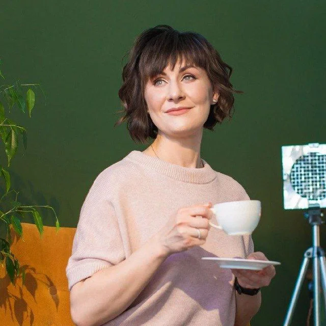

Бесплатно · 5 минут
Тест на жертвенные роли
Это диагностика для выявления жертвенной роли.
Вас ждёт 40 вопросов. Отвечайте честно — «Да» или «Нет». В конце вы увидите результат по каждой роли.
Психолог · психосоматика · онлайн

Депрессия, тревога, боль утраты, психосоматика — работаю с причинами, а не с симптомами. Глубокая архитектурная работа: возвращаю опору и контакт с собой — когда кажется, что выхода нет.
О себе
Я — практикующий психолог, специалист по психосоматике. Более 7 лет помогаю женщинам, которые устали быть удобными, не спят ночами, заедают тревогу и не могут сказать «нет».
Работаю с двух сторон.
Головные боли, тяжесть в желудке, бессонница, давление.
Самоценность, критики, жертвенные роли, мысли, эмоции.
Потому что симптом без причины возвращается. А работа с причиной без работы с симптомом не даёт понимания, что сообщает тело. И оно продолжает болеть.
Я психолог, не врач. Не ставлю диагнозы и не заменяю медицинскую помощь. Но помогаю увидеть связь между телом и эмоциями — и вернуть опору, когда кажется, что выхода нет.
Услуги
Начните отсюда · 30 минут
Находим, что даёт трещину — и как это связано с вашим симптомом.
Бесплатно · 5 минут
Это диагностика для выявления жертвенной роли.
Вас ждёт 40 вопросов. Отвечайте честно — «Да» или «Нет». В конце вы увидите результат по каждой роли.
Бережно · 4 сессии
Слушаем, о чём она. Не глушим. Где живёт в теле, какая потребность под ней. Снимаем телесное напряжение и находим причину.
Важно · 2 сессии
Учимся говорить «нет» без вины. Отрабатываем манипуляции. Для тех, кто устал быть удобной.
Симптом, который не объясняется анализами. Исследуем: где живёт, о чём молчит, что под ним. Для тех, кто хочет понять, а не просто «успокоить».
СвязатьсяРебёнок болеет, а причина — не в анализах? Исследуем, что тело ребёнка пытается сказать. Через игру, через тело, через родителей.
СвязатьсяГлубокая работа с психосоматикой. Симптом (тело — головные боли, тяжесть в желудке, бессонница, давление) и причина (самоценность, критики, жертвенные роли, мысли, эмоции).
Не просто «успокаиваем» симптом — разбираем, откуда он. И возвращаем ценность, которая уже есть внутри. Для тех, кто готов идти в глубину.
Программа начинается с диагностики. Запишитесь — и мы поймём, подходит ли она вам.
Записаться на диагностикуБезопасно встретиться с внутренней Дурой (свобода, «хочу») и Критиком (контроль, «надо»). Не чтобы победить одного из них. А чтобы соединить их силу.
Девичники, женские круги, ретриты, индивидуально.
СвязатьсяДля тех, кто идёт в программу «Тело и ценность». Практики, отработка домашних заданий, поддержка и обратная связь. Вы не одни.
Связаться01
Симптом — это сигнал. Причина — то, что его создало.
02
А слушаем, какую информацию он хочет до вас донести.
FAQ
Я психолог, не врач. Не ставлю диагнозы и не заменяю медицинскую помощь. Работаю с психосоматикой через исследование: где живёт симптом, о чём он, что под ним. И помогаю увидеть связь между телом и эмоциями.
Зависит от запроса. Иногда достаточно 2 сессий, чтобы разомкнуть круг. Иногда нужна глубокая программа на 12–16 сессий.
Онлайн. В удобное для вас время. Из любого города.
Это нормально. Многие не умеют. Мы будем учиться. Медленно.
С бесплатной диагностики. Там мы определим, где трещина — и как это связано с вашим симптомом.
Этот путь можно начать с первого шага — с бесплатной диагностики.
Записаться на диагностику